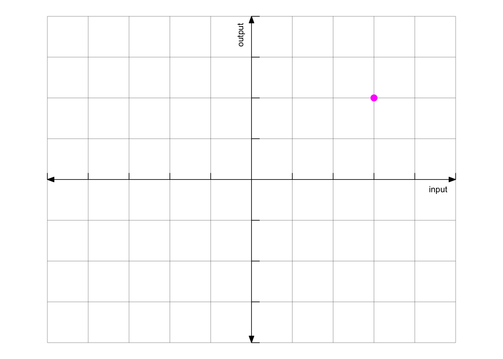
7 Core modeling functions
Vocabulary Review
- arg (6)
- data (2)
- functions (6)
- magnitude (5)
- pure number (3)
- quantity (3)
- rate (4)
- units (3)
New
- core modeling functions
- input and output scaling
The previous chapter introduced notation for functions and their args. Functions can have any number of args. In modeling, a function representing one of the sharp-cornered boxes—a quantity endogenous to the model, will have one arg for each of the incoming arrows originating from other boxes.
This chapter introduces and names a small set of one-arg functions that are particularly useful in modeling. We call these the ☞ core modeling functions ☜. In making selections for the core modeling functions, our primary goal is to provide a library of simple relationships of the sort that appear in many modeling contexts. Each core modeling function will have a name, so you can think of them as letting you refer to a relationship type by name: an aid to communication both with other people and with the computer.
7.1 Shapes of the core modeling functions
We display the shapes of the core modeling function in a conventional way: graphing the function on square-gridded graph paper. The core modeling functions have been specifically defined to take a pure number as input and to produce a pure number as output. To remind the reader of this, the graphs of the core modeling functions are placed on a small grid of unmarked graph paper with a major horizontal and a major vertical axis.
The coordinates of the graph paper are used to determine the input-to-output values of the function. The grid lines in the display are not just decoration: they show how a numeric input gets translated to a numeric output.
In the displays of the core modeling functions, you can infer the numerical values of input and output by counting the vertical and horizontal grid lines respectively. The vertical axis marks zero on the horizontal scale. The successive vertical lines correspond to values separated by 1. The horizontal grid lines are interpreted in the same way.
Why not label the graph paper with the numerical values? It would be simple enough to do, but for the reasons described in sec-input-output-transforms it would make the graphics too busy.
We will work with eight core modeling functions. Often, one or another of these eight will suffice for modeling the relationship between two quantities.
The eight core modeling functions.
We have constructed the core modeling collection from the collective experience of modelers over many generations. We have intentionally violated convention by giving even famous functions new names that are more descriptive than the traditional names.
Often, the name of a core function is a reminder of the shape. For instance, hill() has a graph that looks like a hill (in cross-section), while hillside() is just one side of the hill. Osc() is oscillatory, that is, goes up and down repeatedly, like a long chain of hills. On the other hand, sometimes, the names—recip(), exp2(), and log2()—honor traditional nomenclature.
same()
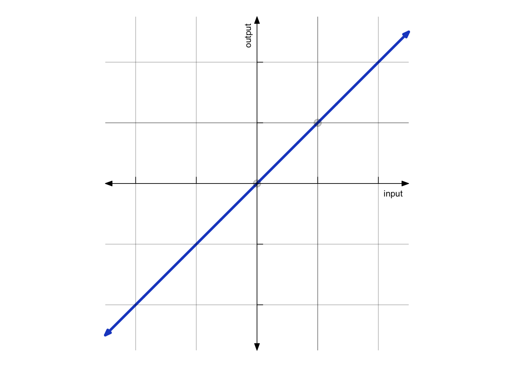
The name same() reflects that the output is the same as the input. On a graph this corresponds to a diagonal line.
flat()
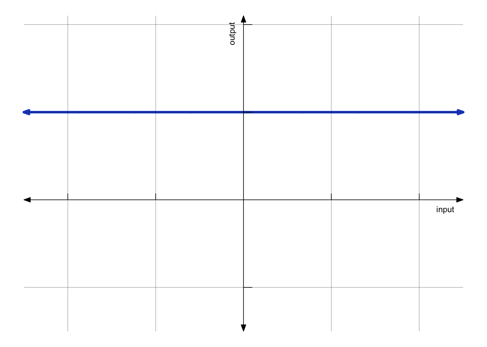
The output of flat() is always 1, regardless of the input.
hill()
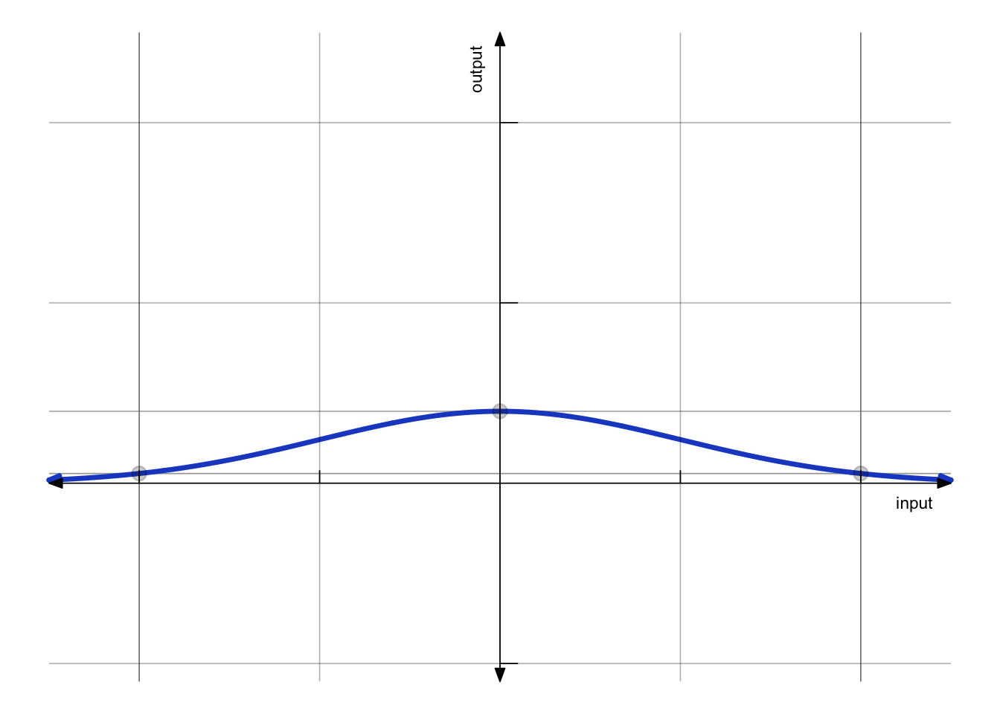
The function output rises gradually from zero output, then falls, returning gradually to zero output.
hillside()
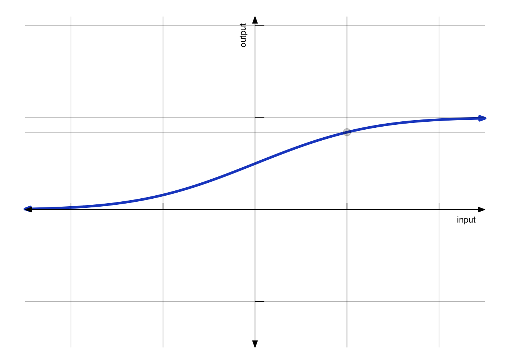
The function output rises gradually from zero, leveling off at an output of 1.
exp2()
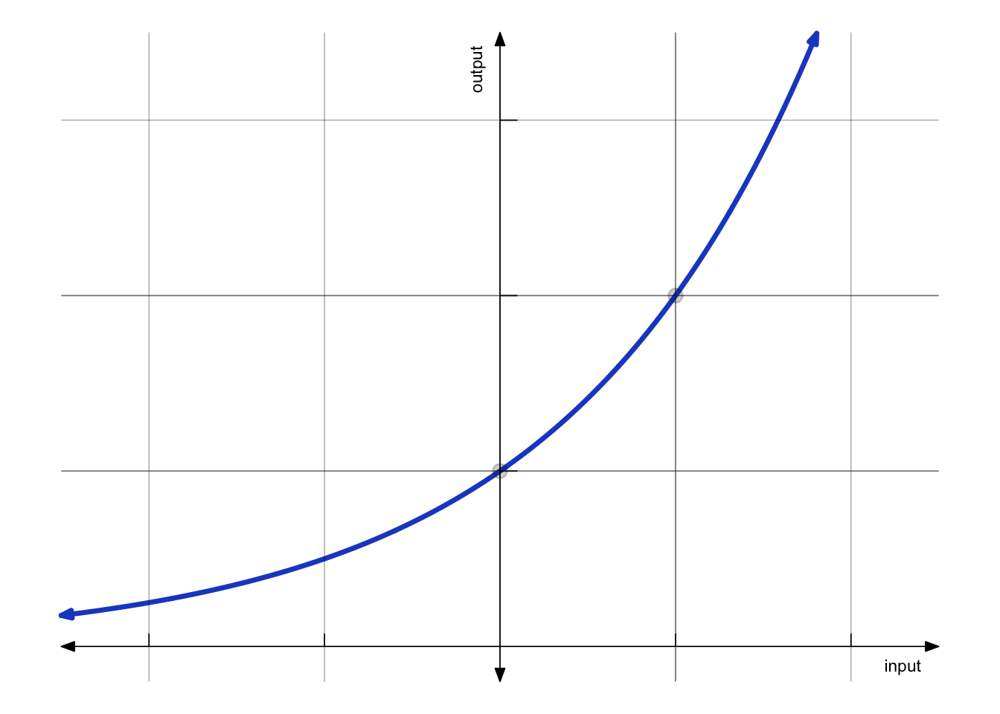
The function starts out almost flat then rises at an every-increasing rate. This pattern is called exponential growth. Another way to see this, exponential growth corresponds to steady, uniform growth in magnitude. (See Chapter 5) exp10() produces magnitude in the familiar steps by a factor of 10.
log2()
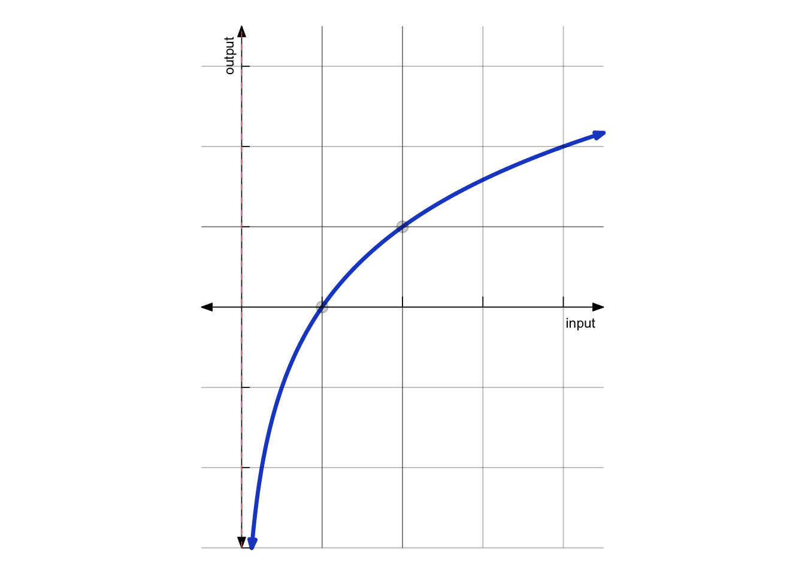
For each doubling of the input value, the function output goes up by 1 unit. Only positive inputs are allowed. Another way to see this: the logarithm reads off the magnitude of a number. log10() gives the scientific-notation format of magnitude.
recip()
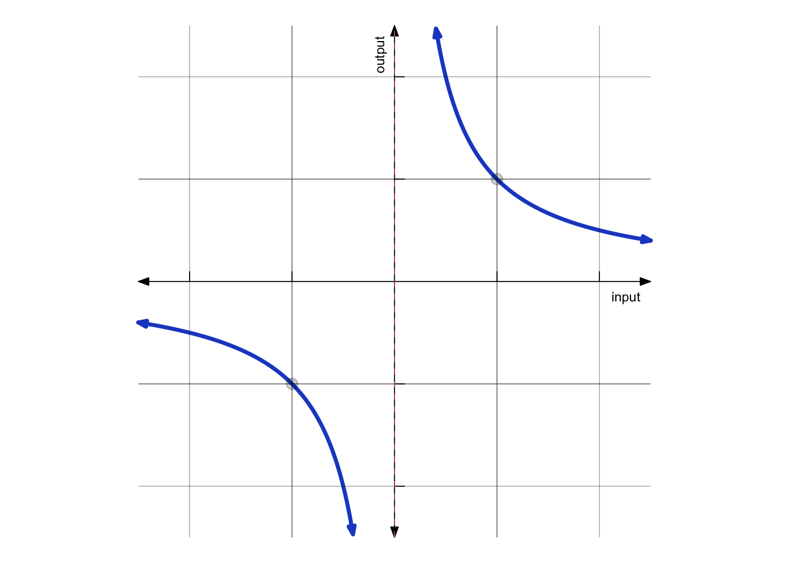
The reciprocal function. The output is one over the input. For instance, if the input is 2, the output is 1/2. Negative inputs produce negative outputs.
osc()
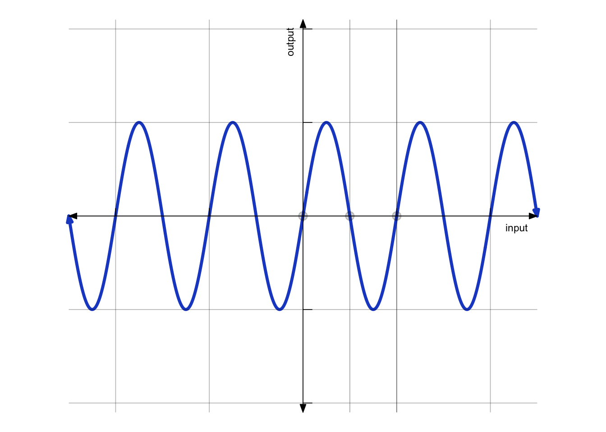
The name osc() is short for oscillatory; the function output oscillates up and down as the input increases. A complete cycle is accomplished in one unit of the input. Another way to say this: The period of osc() is 1.
7.2 Input and output scaling
The core modeling functions have been defined always to take a pure number as input and produce a pure-number output. In modeling, however, typically the inputs to a function are quantities and so is the output. There is a simple strategy for using the core modeling functions to represent quantity-to-quantity relationships. We call this ☞ input and output scaling ☜.
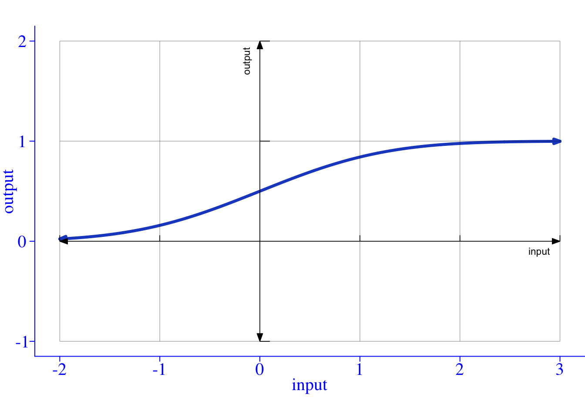
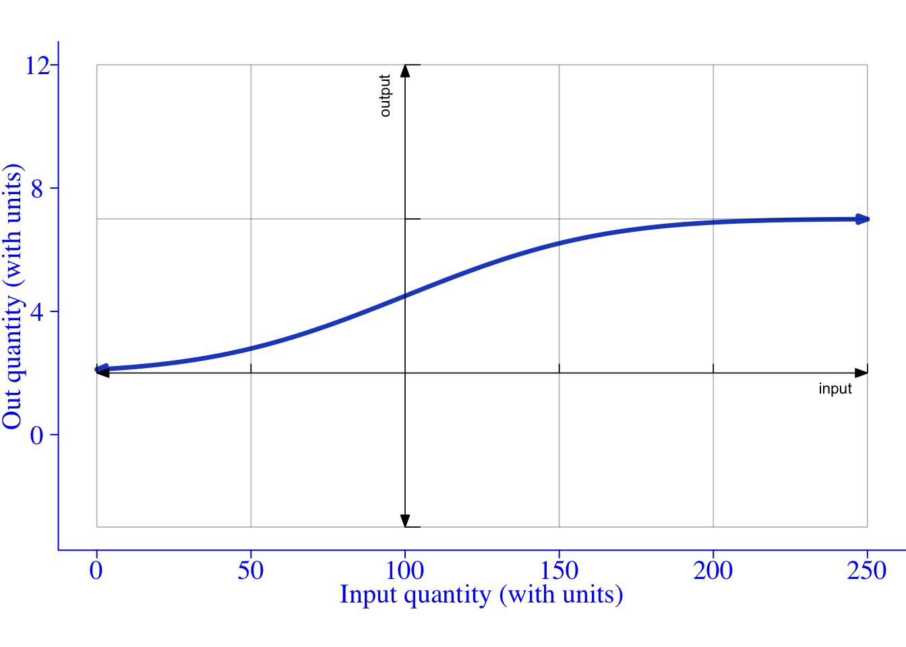
Figure fig-scaling-2-panels shows the essence of the scaling technique. We apply a new set of tick marks is applied to the modeling function. These are shown in blue in the figure.
In providing a quantity as input to the function, use the blue labels on the horizontal axis. In reading off the output, use the blue labels on the vertical axis. For the scaled function depicted in Figure fig-scaling-2-panels, the input 150 (with units as appropriate) corresponds to the output 5 (again, with whatever are units of the output quantity).
In brief, the core modeling function takes pure-number input and output which you can read from the black grid lines. The input-and-output scaled function has quantity inputs which you read from the blue axes.
Once you have the blue axes arranged suitably for your modeling purpose, it’s not hard to write the customized function in, for instance, a computer implementation. To illustrate for the scaled example in Figure fig-scaling-2-panels(b), we’ll call the customize quantity-to-quantity function modelfun():
Input scaling facts: The math input 0 has the blue label 100. A step of one unit on the math axes corresponds to a step of 50 on the blue axes.
Output scaling facts: The math output 0 corresponds to about 2 on the blue axes; this means that the \(B\) output scaling parameter is 2. The math output 1 corresponds to 7 on the blue axes, so that 1 step in math input—from 0 to 1—corresponds to steping from 2 to 7 in the quantity output. That is, a step of one unit of math output is 5 units of quantity output. This corresponds to an \(A\) parameter of 5 for the output scaling.
7.3 Example: Global oil production
Figure fig-world-oil-triptych shows global oil production each year since 1900. Production is measured in terrawatt-hours. To put that in context, 16 PWh is enough fuel for all the world’s 1.7 billion gasoline vehicles for a year’s driving. [If the global fleet were electric, the energy consumption would be about 3.5 PWh.]
Oil production through 1975 follows an exponential growth pattern: increasing at an every-increasing rate.
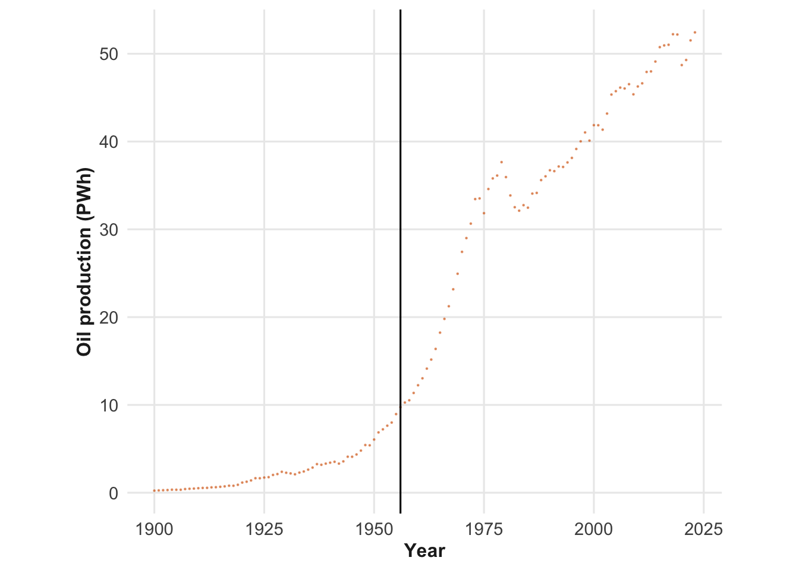
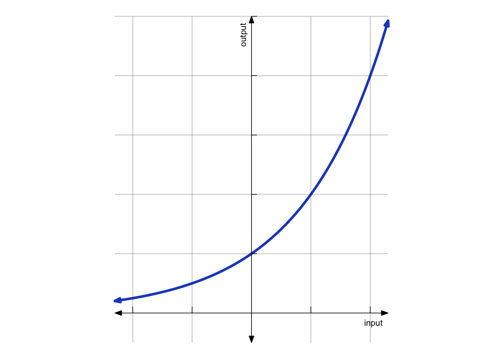
exp2()
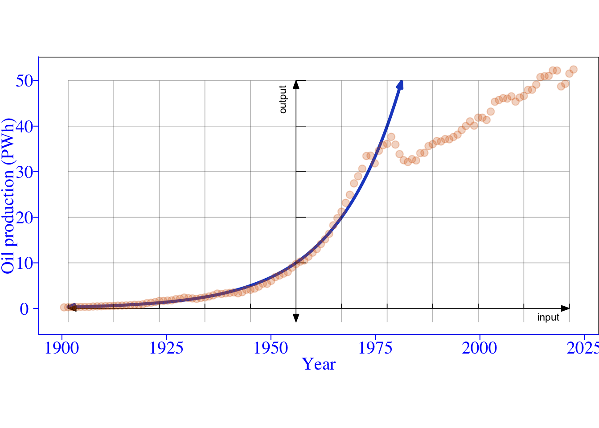
The scales of the historical oil-production plot are straightforward. The data run from 1900 to 2023. Production was near zero in 1900 and reached about 50 PWh in 2023. The production growth pattern before about 1975 is reminiscent of the shape of the exp2() core modeling function, but the scale in the graph of exp2() is unsuited to the data scale.
By figuratively picking up the oil-data graph, along with its scales, and stretching and shifting it appropriately, we can adopt the scale to the shape of the exponential function, at least for the years before 1975. The result, in panel (c), is a graphic with two scales. The blue scales on the outside come from the oil data. The input scaling for this model of oil production comes from the alignment of the mathematical gridding with the horizontal blue quantity scale.
For instance, zero on the mathematical horizontal grid—the location of the double-headed vertical “output” line—matches up to 1956. You can also see that year 2000 in the blue scale matches up closely to 4 on the horizontal grid scale. Consequently, the input scaling function will turn 1956 into 0 and year 2000 to 4.
7.4 Stories told by shape
For each core modeling function, we present the story in two ways: a narrative and a graph. The action of stories typically develops over time. In the language of functions, we will treat time as the input and examine the output over time. Of course, in any given modeling context, the input might be something other than time: for instance, the dose of a drug, or the speed of a vehicle.
To avoid unnecessary abstraction, our descriptions will assume that the function’s output is the outdoor temperature. The brief stories we will tell to introduce each function will be about how temperature changes over time.
- osc( )
- A function that oscillates smoothly up and down, repeating itself over and over again. Such repeating functions are called ☞ periodic ☜. For example, the outdoor temperature rises and falls each day, repeating itself roughly the same way day after day.
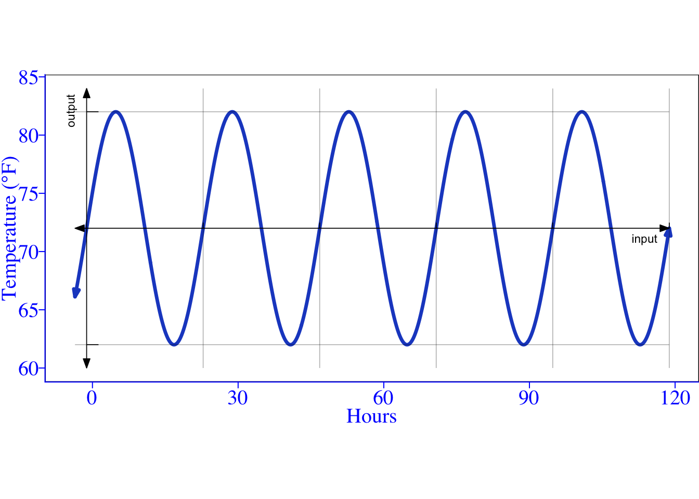
- hillside( )
- The hillside function starts steadily, then gradually increases before leveling off. For example, hillside() might represent the temperature as a warm front moves past at around 10 am: a steady high temperature in the afternoon having gradually replaced the the mornings low temperature.
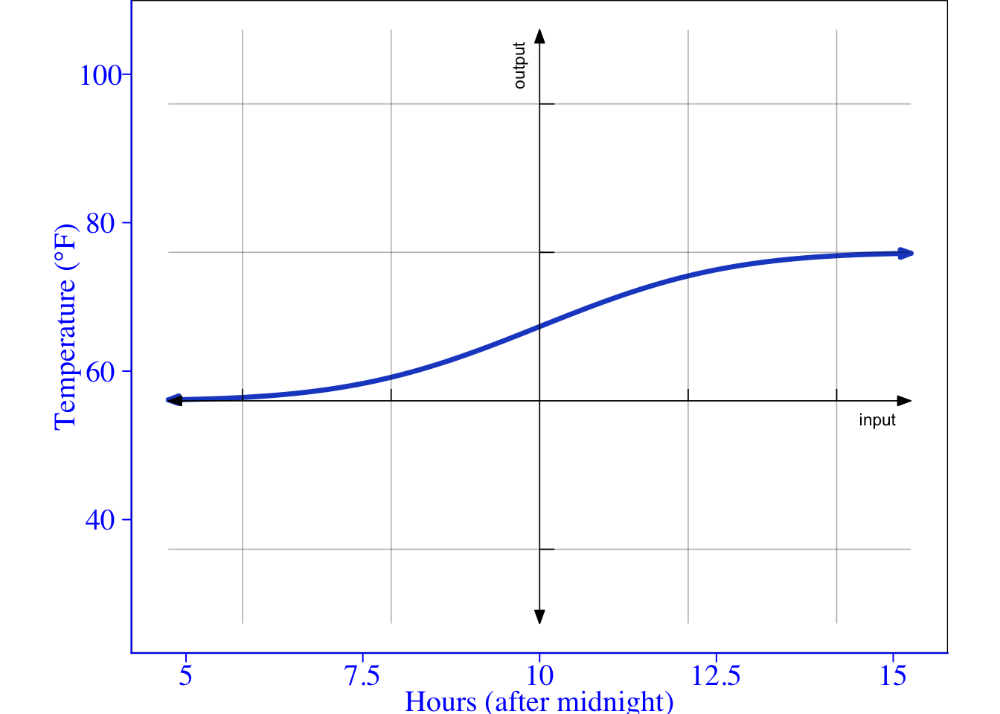
- hill()
- The hill() function goes up from a baseline and then goes back down to the baseline. For instance, the hill() can describe a heat wave lasting several days before relief and the return to normal temperature.
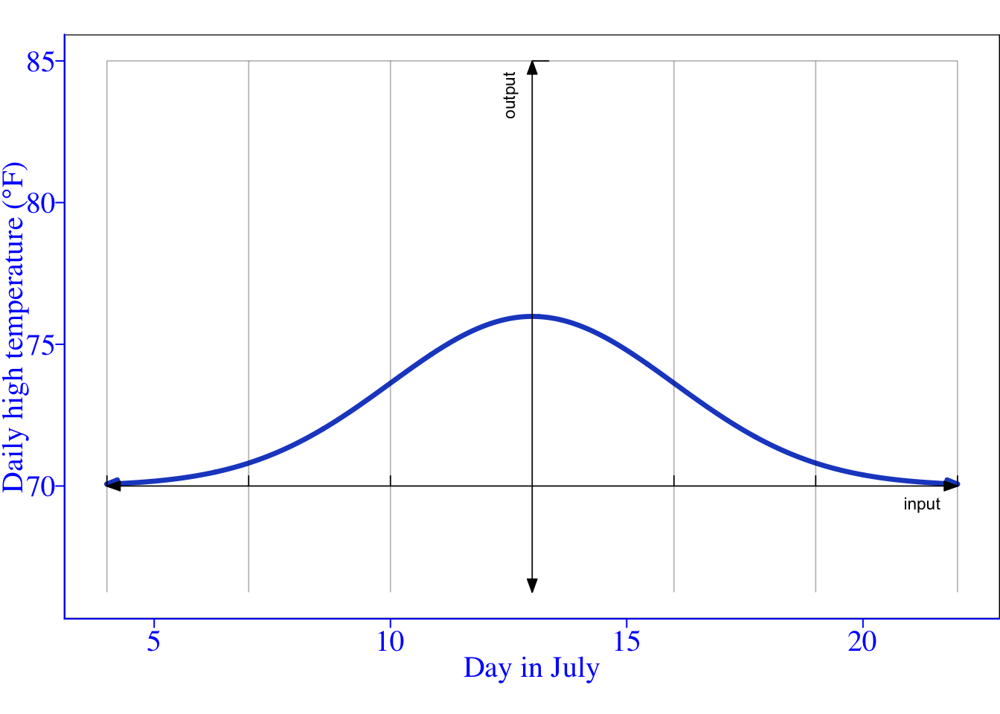
- exp2( )
- After each unit interval of time, the temperature doubles from what it was at the start of the interval. Think of an apocalyptic science-fiction story about climate change. The temperature is increasing over time, and as it does, various feedback mechanisms—e.g., the release of methane from melting permafrost or the increased absorption of sunlight by the ocean as an ice cap melts—strengthen.
-
Eventually, of course, something has to give. The doubling pattern cannot continue indefinitely. But the
exp2()core modeling function doesn’t add that bit to the story.
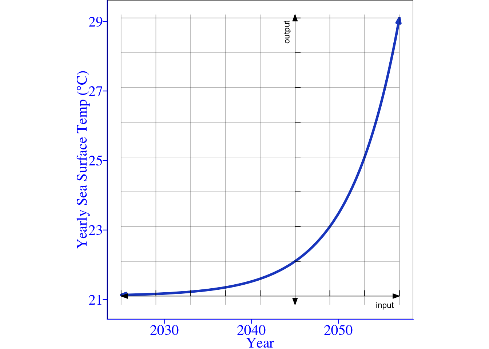
- log2()
- Picking up on the science fiction described under exp2(), imagine a crusty, old meteorologist who tells how long it will take for the doubling temperature to reach any given level.
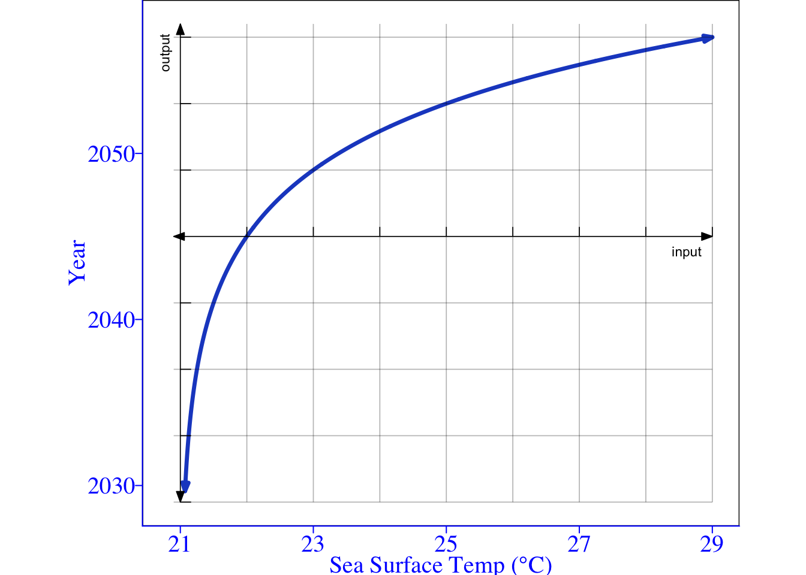
- same( )
- As time increases, the temperature increases likewise. Hour to hour, the temperature increases by the same amount.
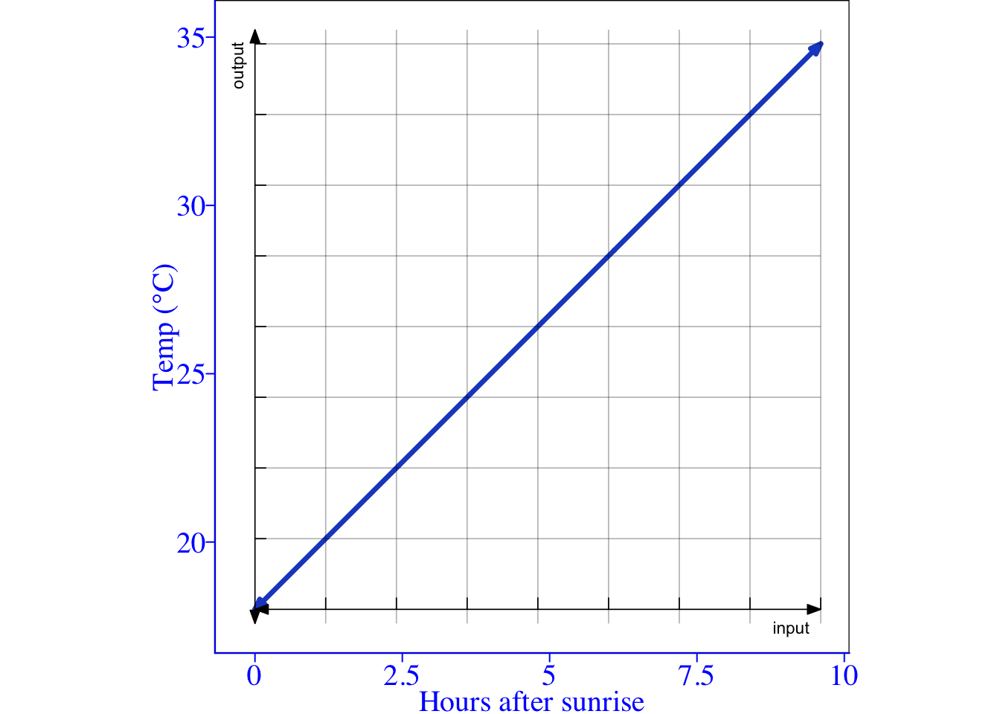
- flat()
- A story with no action. As time goes by, nothing changes! Daytime temperatures are the same as nighttime temperatures.
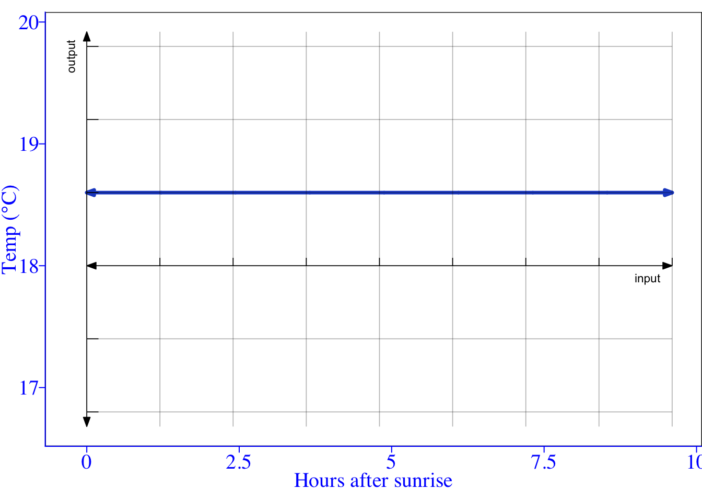